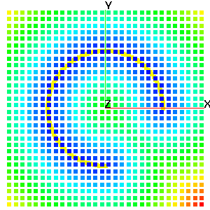

COMPUTE
FORMAT:This command contains modules that compute various attributes and functions based on one or more mesh objects. This operation will (often) result in new attributes being added to the mesh objects. The action of the command will be controled by the keyword in the second argument position.
distance_field - keyword for distance field calculation. Determine the minimum distance from any node in mo_source to every node in mo_sink and place the result in the node based floating point attribute, distance_field_attribute in mo_sink. The computation is accelerated by using the kdtree search algorithm.
signed_distance_field - keyword for signed distance field calculation. Determine the minimum distance from any node in mo_source to every node in mo_sink and place the result in the node based floating point attribute, distance_field_attribute in mo_sink. The computation is accelerated by using the kdtree search algorithm. Using this option the mo_source MUST be either a triangle or quad surface mesh object. If the surfaces form a topologically closed volume then positive, 'above' distance is in the direction of the surface normal vector. Negative is 'below' the surface. If the surface is not a closed volume, then the assumptions described in the surface command are used to determine what is above and what is below the surface.Other places to look for modules that compute some standard mesh attributes include, quality, which will compute aspect ratio and volume, cmo/addatt, which will compute normal vectors, dihedral angles, solid angles, meadian points, Voronoi points and more. User functions can be computed with the math module.
compute/distance_field/mo_sink/mo_source/distance_field_attribute
compute/signed_distance_field/mo_sink/mo_source/distance_field_attributeEXAMPLES:
compute / distance_field / mo_sink / mo_src / dfield
compute / signed_distance_field / mo_sink / mo_src / dfield
|

|
cmo / create / cmo_src |

|
* |